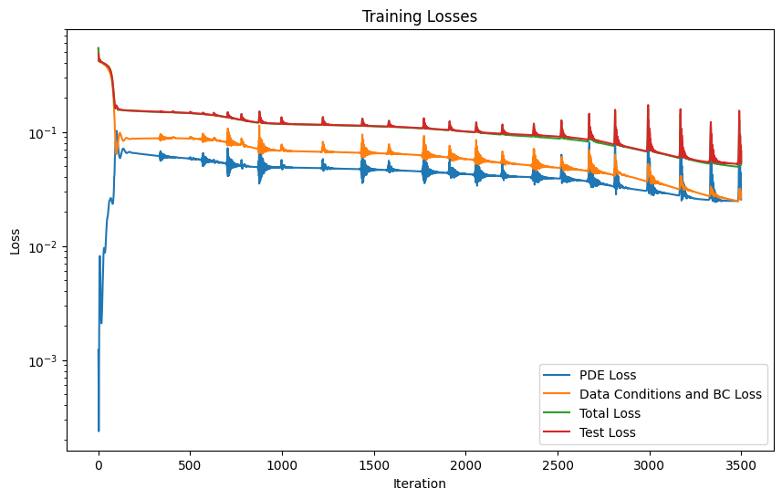
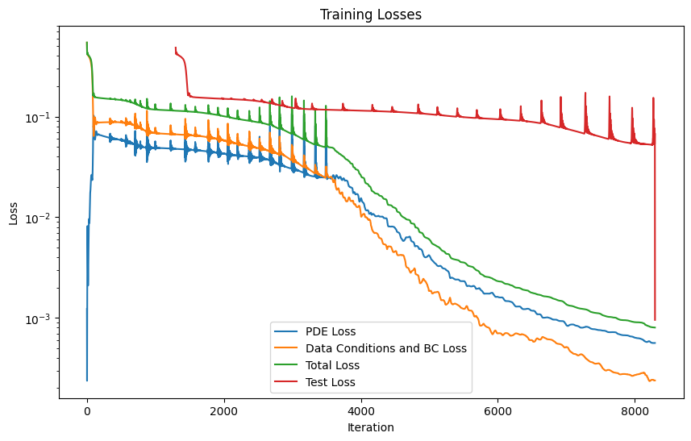
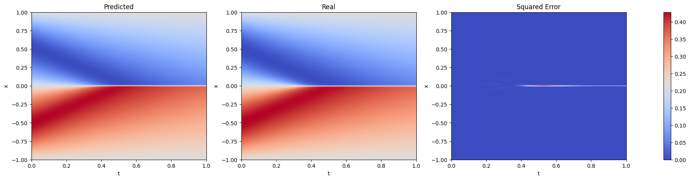
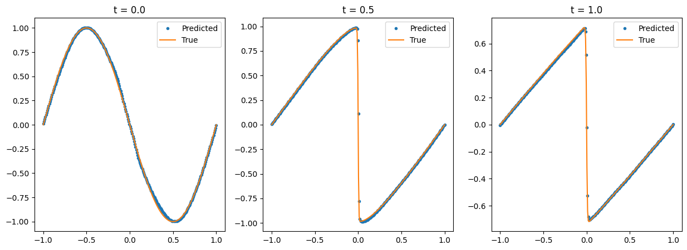

Train a PINN (Physics Informed Neural Network) with a custom PDE#
[1]:
import torch
import numpy as np
import matplotlib.pyplot as plt
import pyLOM
from pyLOM import NN
from pathlib import Path
[2]:
data_dir = Path.cwd().parent / 'data'
We will solve a Burgers equation:
\[\frac{\partial u}{\partial t} + u\frac{\partial u}{\partial x} = \nu\frac{\partial^2u}{\partial x^2}, \qquad x \in [-1, 1], \quad t \in [0, 1]\]
with the Dirichlet boundary conditions and initial conditions
\[u(-1,t)=u(1,t)=0, \quad u(x,0) = - \sin(\pi x)\]
The reference solution is here: lululxvi/deepxde
Define the collocation points#
We define 256 points on x and 100 points on t. Then, 5000 points are chosen to train the PINN.
[3]:
POINTS_ON_X = 256
POINTS_ON_T = 100
num_train_simulations = 5000
t = np.linspace(0, 1, POINTS_ON_T)
x = np.linspace(-1, 1, POINTS_ON_X)
T, X = np.meshgrid(t, x)
train_idx = np.random.choice(X.flatten().shape[0], num_train_simulations, replace=False)
TX = np.concatenate([T.reshape(-1, 1), X.reshape(-1, 1)], axis=1)
TX = torch.tensor(TX).float()
train_TX = TX[train_idx]
[4]:
device = 'cuda' if torch.cuda.is_available() else 'cpu'
Define the PDE#
We could use here pyLOM.NN.BurgersPINN, but for demonstrations purposes, we define it here from scratch
[5]:
class BurgersPINN(NN.PINN):
def __init__(self, viscosity=0.01, *args, **kwargs):
super().__init__(*args, **kwargs)
self.viscosity = viscosity
def pde_loss(self, pred, *input_variables):
t, x = input_variables
u = pred
u_t = torch.autograd.grad(u, t, grad_outputs=torch.ones_like(u), create_graph=True)[0]
u_x = torch.autograd.grad(u, x, grad_outputs=torch.ones_like(u), create_graph=True)[0]
u_xx = torch.autograd.grad(u_x, x, grad_outputs=torch.ones_like(u_x), create_graph=True)[0]
f = u_t + u * u_x - (self.viscosity / torch.pi) * u_xx
return (f ** 2).mean()
Define the boundary conditions#
[6]:
class InitialCondition(NN.BoundaryCondition):
def loss(self, pred):
x = self.points[:, 1].reshape(-1, 1)
initial_cond_pred = pred
# the sin is negative because the initial condition is u(0, x) = -sin(pi * x)
ic_loss = (initial_cond_pred + torch.sin(torch.pi * x).to(device)) ** 2
return ic_loss.mean()
class XBoudaryCondition(pyLOM.NN.BoundaryCondition):
def loss(self, pred):
# as u on the boundary is 0, we can just return the mean of the prediction
return pred.pow(2).mean()
The points needed on each boundary condition are:
* For the initial condition: The t coordinate must be 0 and the x coordinate should include all of the points on the x domain.
* For the upper and lower boundary conditions: As we have 2 boundaries, there should be 2 tensors, one with x = -1 and t taking all the possible values on its domain and other one with x = 1. Then, both thensors are staked vertically.
[7]:
initial_points = torch.tensor(x).reshape(-1, 1)
initial_bc = InitialCondition(
torch.cat([torch.full_like(initial_points, 0), initial_points], dim=-1).float(),
)
boundary_points = torch.tensor(t).reshape(-1, 1)
boundary_bc = XBoudaryCondition(
torch.cat(
[torch.cat([boundary_points, torch.full_like(boundary_points, -1)], dim=-1),
torch.cat([boundary_points, torch.full_like(boundary_points, 1)], dim=-1),]
).float()
)
Dataset creation#
In this example, a PINN will be trained to learn the PDE just from the equation and some boundary conditions. A way to improve the accuracy of the model, is giving it simulation data on some points. This can be achieved creating datasets that has a value for that data as described on the next cell
Data available at: maziarraissi/PINNs
[8]:
import scipy
data = scipy.io.loadmat(data_dir / 'burgers_shock.mat')
# To train the model with simulation data too, uncomment the following lines
# u_simulation = np.real(data['usol']).flatten().reshape(-1, 1)
# train_dataset = torch.utils.data.TorchDataset((train_TX, u_simulation[idx]))
# test_dataset = torch.utils.data.TorchDataset((TX, u_simulation))
train_dataset = torch.utils.data.TensorDataset(train_TX)
test_dataset = torch.utils.data.TensorDataset(TX)
[9]:
train_dataset[:][0], train_TX.shape, (train_TX.shape[1],)
[9]:
(tensor([[ 0.7172, -0.7961],
[ 0.4747, -0.5451],
[ 0.7778, 0.7333],
...,
[ 0.5758, -0.0196],
[ 0.7576, 0.8745],
[ 0.0000, 0.0353]]),
torch.Size([5000, 2]),
(2,))
Train the pinn#
[10]:
input_dim = TX.shape[1]
output_dim = 1 # u(t, x)
net = pyLOM.NN.MLP(
input_size=input_dim,
output_size=output_dim,
hidden_size=40,
n_layers=4,
activation=torch.nn.functional.tanh, # With relu the model struggles to converge
)
burgers_pinn = BurgersPINN(
viscosity=0.01,
neural_net=net,
device=device,
)
[11]:
training_params = {
'optimizer_class': torch.optim.Adam,
'optimizer_params': {'lr': 1e-3},
'epochs': 3500,
'boundary_conditions': [initial_bc, boundary_bc],
'update_logs_steps': 1000,
}
pipeline_adam = pyLOM.NN.Pipeline(
model=burgers_pinn,
train_dataset=train_dataset,
test_dataset=test_dataset,
training_params=training_params
)
model_logs = pipeline_adam.run()
burgers_pinn.plot_training_logs(model_logs)
Epoch 1/3500 Iteration 0. Pde loss: 1.2257e-03, data/bc losses: [5.3886e-01, 4.8105e-03]
Epoch 1001/3500 Iteration 0. Pde loss: 4.7048e-02, data/bc losses: [6.9344e-02, 1.2603e-03], test loss: 1.1854e-01
Epoch 2001/3500 Iteration 0. Pde loss: 4.2610e-02, data/bc losses: [5.7098e-02, 1.0305e-03], test loss: 1.0123e-01
Epoch 3001/3500 Iteration 0. Pde loss: 3.8859e-02, data/bc losses: [4.8018e-02, 1.3270e-03], test loss: 8.8552e-02

The model is retrained with an LBFGS optimizer to improve its acuraccy#
[12]:
lbfgs_params = {
'lr': 0.01,
'max_iter': 12000,
'max_eval': 10000,
'history_size': 200,
'tolerance_grad': 1e-12,
'tolerance_change': 0.5 * np.finfo(float).eps,
'line_search_fn': 'strong_wolfe'
}
training_params = {
'optimizer_class': torch.optim.LBFGS,
'optimizer_params': lbfgs_params,
'loaded_logs': model_logs,
'update_logs_steps': 0,
'epochs': 1,
'boundary_conditions': [initial_bc, boundary_bc],
}
logs = pipeline_lbfgs = pyLOM.NN.Pipeline(
model=burgers_pinn,
train_dataset=train_dataset,
test_dataset=test_dataset,
training_params=training_params
)
model_logs = pipeline_lbfgs.run()
[13]:
burgers_pinn.plot_training_logs(model_logs)

Make the predictions and plot the results#
[14]:
u = burgers_pinn.predict(test_dataset).reshape(POINTS_ON_X, POINTS_ON_T)
[15]:
u_ref = np.real(data['usol'])
Evaluation using RegressionEvaluator#
[16]:
evaluator = NN.RegressionEvaluator()
evaluator(u.reshape(-1, 1), u_ref.reshape(-1, 1))
evaluator.print_metrics()
Regression evaluator metrics:
mse: 7.8770e-04
rmse: 0.0281
mae: 0.0089
mre: 20.0047%
ae_95: 0.0331
ae_99: 0.0693
r2: 0.9979
l2_error: 0.0457
[17]:
fig, axs = plt.subplots(1, 3, figsize=(25, 5))
for i, (data, title) in enumerate(zip([u, u_ref, (u - u_ref) ** 2], ['Predicted', 'Real', 'Squared Error'])):
im = axs[i].imshow(data, extent=[0, 1, -1, 1], origin='lower', aspect='0.25', cmap='coolwarm')
axs[i].set_title(title)
axs[i].set_xlabel('t')
axs[i].set_ylabel('x')
axs[i].set_aspect('auto')
axs[i].grid(False)
fig.colorbar(im, ax=axs.ravel().tolist())
plt.show()

[18]:
num_time_snapshots = 3
x = torch.linspace(-1, 1, 256).reshape(-1, 1)
fig, axs = plt.subplots(1, num_time_snapshots, figsize=(15, 5))
for i in range(num_time_snapshots):
instant = i / (num_time_snapshots - 1)
t = torch.full_like(x, instant)
u_instant_t = burgers_pinn(torch.cat([t, x], dim=-1).to(device)).detach().cpu().numpy().reshape(-1)
t_idx = int(np.round((u_ref.shape[1] - 1) * (i / (num_time_snapshots - 1))))
u_true = u_ref[:, t_idx]
axs[i].title.set_text(f"t = {instant}")
axs[i].plot(x, u_instant_t, '.', label='Predicted')
axs[i].plot(x, u_true, '-', label='True')
axs[i].legend()

Save and load the model#
[19]:
print("Saving model")
burgers_pinn.save('burgers_pinn.pt')
print("Model saved")
burgers_pinn_loaded = BurgersPINN.load('burgers_pinn.pt', device=device)
print("Model loaded")
predictions = burgers_pinn_loaded.predict(test_dataset)
print(f"Loss: {np.mean((predictions.reshape(-1, 1) - u_ref.reshape(-1, 1)) ** 2)}")
Saving model
Model saved
Model loaded
Loss: 0.0007877025398883633